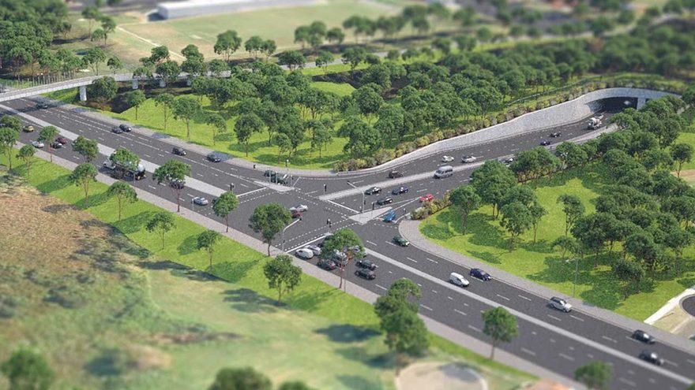
M6 Motorway Stage 1
Australia, Sydney
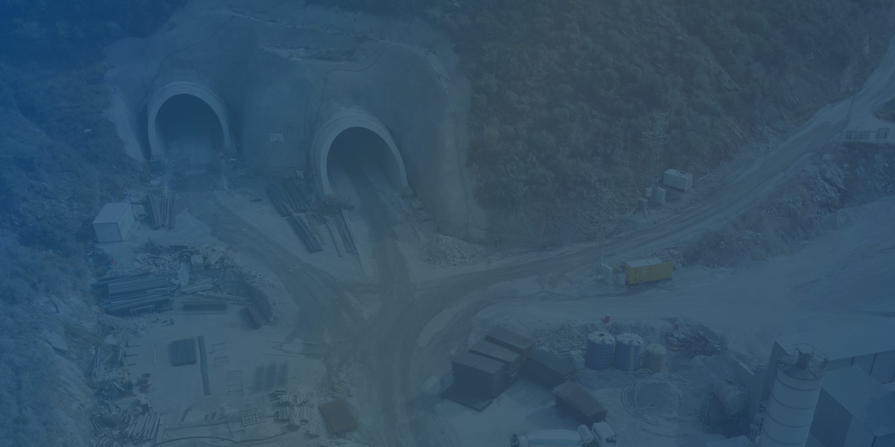
Tunnelling Projects
An integrated eco-system which provided complete package solutions that deliver advanced safety capability to protect underground personnel, manage workplace hazards exposure, and provide total operational visibility for all stakeholders.
Connect critical site systems. Understand the complete operating condition. Respond sooner.
Underground operations depend on people, vehicles, ventilation, environmental monitoring, access systems and safety infrastructure working together. iottag brings these systems into one connected operational environment combining real-time location, sensor and site-system data to help teams identify changing conditions, coordinate controls and reduce risk across the operation.
Understand airborne contaminant levels in the context of what is actually happening underground—not simply as a reading from an environmental sensor. This is particularly relevant to diesel particulate matter (DPM), respirable dust and other contaminants associated with tunnelling activities. Australian tunnelling guidance identifies diesel emissions and airborne contaminants as important underground hazards and enforces monitoring, ventilation and traffic controls.
Atlas combines fixed and mobile dust/DPM monitoring with personnel location, vehicle activity and ventilation data. When concentrations increase, teams can see where the issue is occurring, which personnel may be exposed, what vehicle activity may be contributing and whether ventilation conditions are adequate.
This creates the operational context to respond—adjust ventilation, investigate contributing plant or activity, restrict exposure, or relocate personnel where required.
Core Benefit
Reduce personnel exposure by identifying where airborne contaminants are building, who may be exposed and what operational conditions are contributing.
Gas readings become significantly more valuable when connected with personnel location and the systems capable of controlling or responding to the hazard. Air contamination, oxygen depletion, fire and explosion are recognised tunnelling hazards.
Atlas integrates fixed or personal gas detection, personnel tracking, ventilation systems and fire alarm events into a common operational picture.
When hazardous conditions are detected, teams can immediately understand:
What has been detected → Where it is occurring → Who is potentially exposed → What ventilation is operating → Whether associated fire or safety alarms have activated.
Alerts and workflows can then support the appropriate site response.
Core Benefit
Minimise the risk of personnel entering or remaining within a hazardous atmosphere by connecting environmental detection directly with workforce location and operational controls.
Ventilation requirements change as personnel, vehicles and work activities move through an underground operation. Rather than treating ventilation as a static system, iottag provides the operational inputs needed to understand demand dynamically.
Atlas combines personnel location, vehicle activity and ventilation-system data to provide a live view of occupancy and activity across ventilation zones.
This can support ventilation-on-demand strategies where airflow requirements respond to actual personnel and equipment activity rather than operating every area at maximum demand continuously. Mine ventilation-on-demand systems commonly use personnel and vehicle location/status as inputs to airflow control, with reducing ventilation costs among their key objectives.
Core Benefit
Maximise ventilation efficiency while maintaining required underground conditions—helping reduce unnecessary fan operation, energy consumption and operating cost.
During an underground emergency, the priority changes immediately from normal operations to accountability and coordinated evacuation. Effective emergency planning for tunnelling includes evacuation procedures and effective communication, while fire, unsafe atmospheres and ventilation failure can all trigger evacuation.
Atlas connects real-time personnel location with radio/communications systems, fire alarms and access-control data.
When an evacuation is initiated, control teams gain a live picture of:
iottag already supports real-time personnel tracking and movement to designated muster points, providing a strong foundation for this integrated workflow.
Core Benefit
Improve evacuation performance by giving emergency teams real-time personnel accountability and a clearer picture of evacuation progress.
Underground compliance involves far more than checking whether a worker has completed an induction. Personnel, vehicles, plant and equipment can each carry different requirements involving access permissions, permits, competency, inspections and maintenance.
The challenge is ensuring all of those requirements remain aligned as the operation changes.
Atlas connects personnel, vehicles, assets, access control, permits and service/maintenance records into a common compliance layer.
Before a person, vehicle or asset enters a controlled area, the system can verify the relevant conditions—for example:
Person authorised? → Permit valid? → Vehicle compliant? → Asset inspection current? → Maintenance current? → Access permitted.
Exceptions can be identified before they become operational issues, while records provide greater visibility for supervisors, safety teams and audits. iottag already supports access permissions, certifications, compliance tracking, maintenance records and automated personnel check-in/out.
Core Benefit
Maximise site compliance by continuously connecting the requirements of personnel, vehicles, assets and controlled work areas—not managing each in isolation.
A fire underground can quickly become a multi-system event involving people, vehicles, equipment, atmospheric conditions, ventilation and evacuation.
An alarm tells you that something has happened.
Integrated intelligence helps teams understand what is happening around it.
Atlas brings together fire alarm events, personnel and vehicle location, asset information, gas/environmental sensors and CCTV integrations to create a live operational picture around the event.
When a fire alarm activates, teams can rapidly establish:
Where is the alarm? → Who is nearby? → What vehicles/assets are present? → Are gas or environmental conditions changing? → What can CCTV confirm? → Who needs to be evacuated?
This is particularly relevant underground, where fire, explosion and unsafe atmospheres are recognised major hazards and confirmed or suspected underground fires are identified in Australian tunnelling guidance as evacuation triggers.
Core Benefit
Minimise fire risk and improve emergency response by connecting detection with the people, assets and environmental conditions surrounding the event.
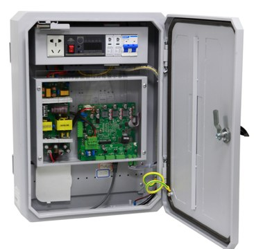
The Integrated Communication Station (ICS) serves as the centralized supervisory control and data acquisition system for facility management, environmental monitoring, security, and emergency operations. This system unifies life safety, physical security, critical communication networks, and automated environmental controls into a single glass pane interface to reduce response times and optimize operational efficiency.
The ICS will interface with and manage eleven (11) distinct peripheral core subsystems via dedicated APIs, network protocols, or dry contact relays.
Centralized Alarm Management: The ICS must aggregate and prioritize incoming alerts using a color-coded threat matrix (Critical, Warning, Informational).
Automated Logic Engine (Interlocking): The system must allow logic routing across subsystems (e.g., If Gas Detection > X ppm, Then ramp Ventilation to 100%, trigger On-Site Strobes, and cue closest CCTV stream).
Audit Logging: All system states, overrides, user actions, and sensor data points must be securely written to a tamper-evident database file for post-incident review.
Workforce visibility is critical within underground environments. The platform supports:
checkWho is on site
checkHow conditions are changing
checkWhere activity is occurring
checkWhere attention may be required
By providing a shared operational understanding, organisations can improve situational awareness and support safer operations.
Beyond safety, tunnelling projects require efficient coordination across multiple work fronts.
The platform helps organisations understand:
Supporting more informed operational decision-making throughout project delivery.
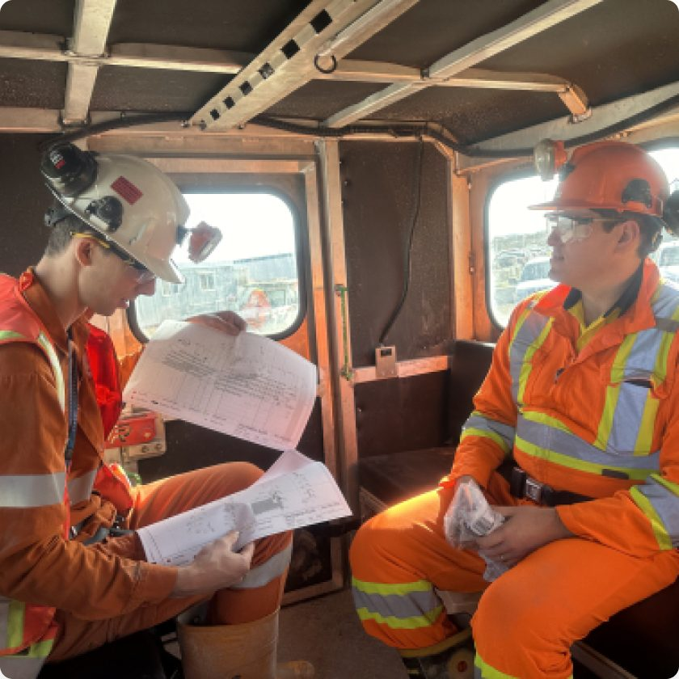
Government owners require confidence that projects are being delivered safely and effectively. Operational Analytics & Benchmarking helps provide a consistent operational picture across every level of the project hierarchy.
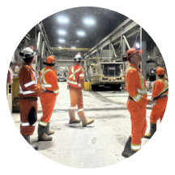
Subcontractors require operational visibility

Main contractors require project oversight
Joint ventures require project assurance
Infrastructure

Australia, Sydney
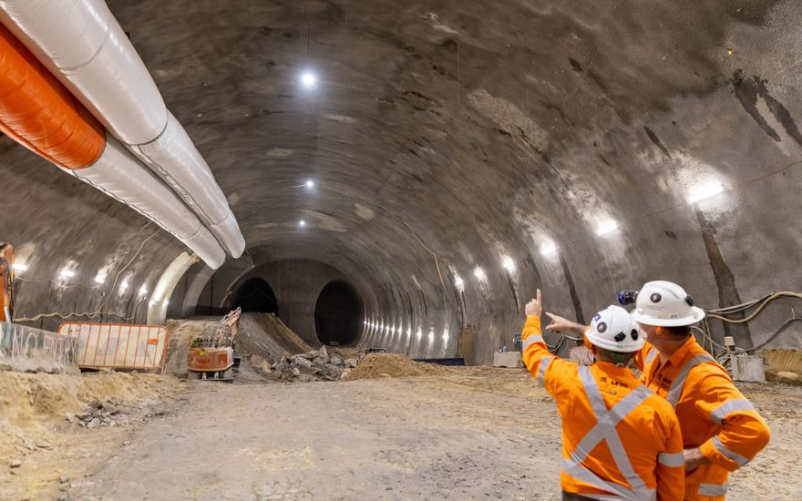
Australia, Sydney
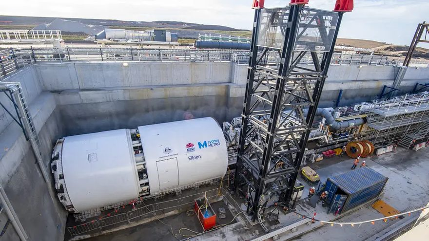
Australia, Sydney
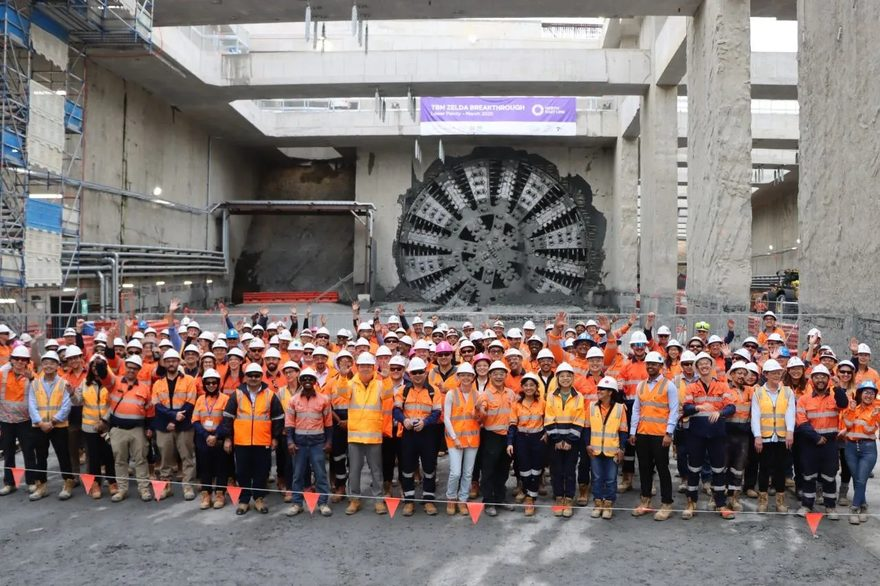
Australia, Victoria
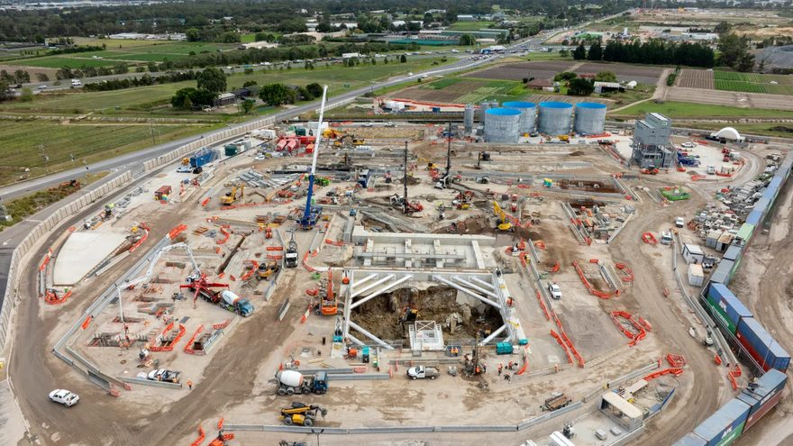
Australia, Victoria
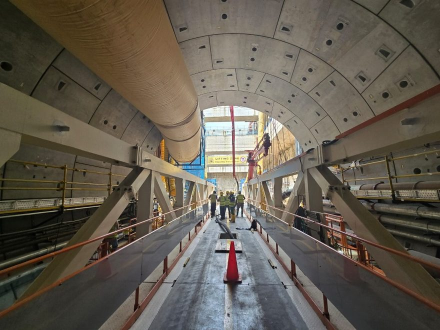
Singapore
Singapore
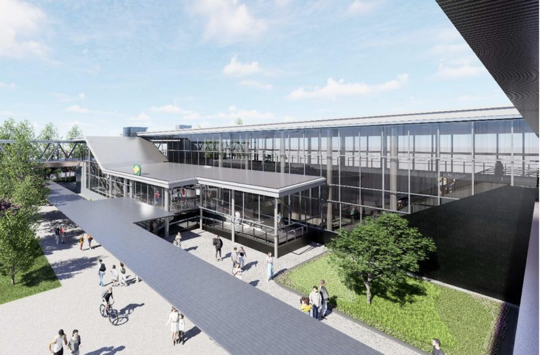
Singapore
Create a shared operational understanding across your project.